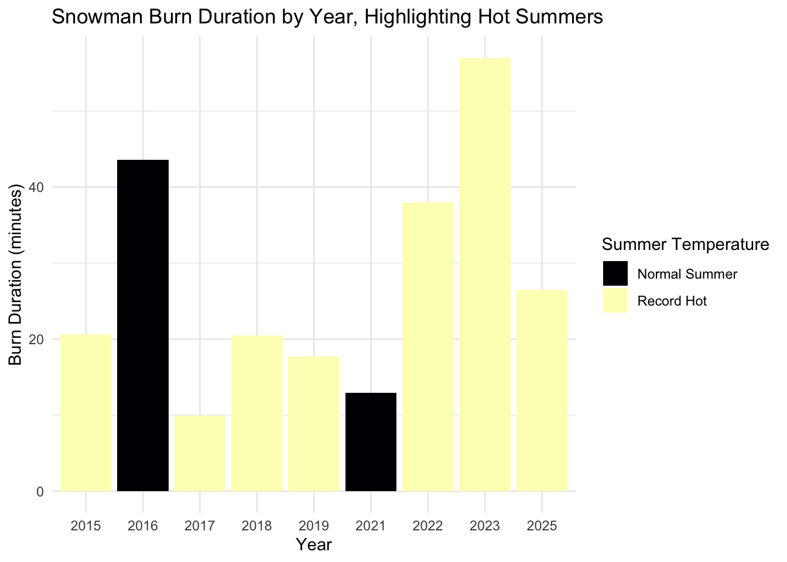

library(tidytuesdayR) # for loading the tidy tuesday data
library(tidyverse) # for data wrangling + ggplot
library(here) # for saving files
library(viridis) # for color-blind friendly color palletetidytuesdayw5
Introduction
Using this the tidytuesday data of this week, I checked the burn duration of our snowman against the average summer temperature over the last 10 years.
Load Libraries
Load Data
#Load tidy tuesday data from November 25 2025
tuesdata <- tidytuesdayR::tt_load('2025-12-02') #load data of the week
sechselaeuten <- tuesdata$sechselaeuten
head(sechselaeuten)# A tibble: 6 × 9
year duration tre200m0 tre200mn tre200mx sre000m0 sremaxmv rre150m0 record
<dbl> <dbl> <dbl> <dbl> <dbl> <dbl> <dbl> <dbl> <lgl>
1 1923 60 16.7 7.03 32.5 247. 56.3 74.0 FALSE
2 1952 6 18.7 9.1 33.7 270. 61.7 93.7 FALSE
3 1953 8 16.7 7.17 30.0 210. 48.7 158. FALSE
4 1956 4 15.1 6.8 28.8 173. 39.7 175. FALSE
5 1958 8 17 8.23 30.7 230. 53 178. FALSE
6 1959 8 17.6 7.83 30.3 227. 52 110. FALSE Tidy the Data
hotsnowman<-sechselaeuten %>%
filter(year %in% 2015:2025, #only keep these rows
!is.na(duration) #only rows with a duration value
)%>%
#only keep these columns
select(year, #Year of Sechselauten festival
duration, #Time elapsed from ignition of Boeoeg effigy until explosion, in minutes.
record) #Years with average summer temperature above 19 degrees Celsius.
head(hotsnowman)# A tibble: 6 × 3
year duration record
<dbl> <dbl> <lgl>
1 2015 20.6 TRUE
2 2016 43.6 FALSE
3 2017 9.93 TRUE
4 2018 20.5 TRUE
5 2019 17.7 TRUE
6 2021 13.0 FALSE Plot the data
hotsnowman %>%
ggplot(aes(x = factor(year), #x-axis
y = duration, # y-axis
fill = record)) + # fill the color
geom_col() + # bar plot
scale_fill_viridis_d(
option = "A", #change the color palette to viridis option A for a good contrasting color
labels = c("Normal Summer", "Record Hot") #rename the legend from FALSE = Normal Summer and True = Record Hot
) +
labs(
title = "Snowman Burn Duration by Year, Highlighting Hot Summers", #title of the plot
x = "Year", #a-xis title
y = "Burn Duration (minutes)", #y-axis title
fill = "Summer Temperature" #legend title
) +
theme_minimal() #minimal theme
Save the plot
ggsave(here("Tidy_Tuesday","Output","Tidy_Tuesday_Week_5.png"))Saving 7 x 5 in imageNew Things I Learned
One new thing I learned this week is how to change the viridis color palette using option = “A”. Before this, I always just used the default setting without really thinking about it. Trying option A made my bar chart look a lot nicer and helped me see the difference between normal summers and record hot summers more clearly with black and yellow contrast. I also learned how to rename the legend directly inside scale_fill_viridis_d(). Before this, I usually changed the legend labels by recoding the variable first. For example, using hotsnowman2 <- hotsnowman %>% mutate(record = ifelse(record == TRUE, “Record Hot”, “Normal Summer”)). So, doing it inside the scale function was new for me.